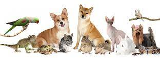

История профессии ветеринар
Впервые это понятие было использовано в 1646 году, однако люди, занимавшиеся лечением болезней у домашних животных, появились гораздо раньше.
В сельском хозяйстве представители этой профессии осуществляют санитарный контроль молока, мяса и других продуктов животного происхождения.
 Профессия ветеринара является очень востребованной, так как сельское хозяйство играет немаловажную роль в промышленной деятельности.
Поэтому очень важно наличие специалиста, который бы следил за здоровьем животных.
Профессия ветеринара является очень востребованной, так как сельское хозяйство играет немаловажную роль в промышленной деятельности.
Поэтому очень важно наличие специалиста, который бы следил за здоровьем животных.
С древних времен, с тех пор, как человек приручил животных, появилась необходимость следить за состоянием их здоровья.
Братья наши меньшие страдают от тех же заболеваний, что и мы - это и обычная простуда, и ангина, и язва желудка, и мочекаменная болезнь.
Нередко у оставленной на время в чьих-то добрых руках собаки от тоски не выдерживает сердце - случается инфаркт.
Лечение сложнейших болезней, конечно же, требует времени.
И ветеринарам сначала приходится бороться за жизнь своих пациентов, быстро принимая решения, а потом долго и терпеливо их выхаживать, при этом успокаивая расстроенных хозяев.
В наши дни эта профессия кроме непосредственного лечения животных включает в себя множество различных направлений.
По большому счету от того, насколько хорошо организована в стране ветслужба, зависит здоровье ее граждан.
Дело в том, что она ведет постоянную борьбу с болезнями, которые могут представлять опасность для людей.
Ветеринары контролируют качество мяса, молока, яиц и других продуктов животного происхождения на ветеринарных пунктах и станциях, фермах, в отделах производственно-ветеринарного контроля на мясокомбинатах, на мясомолочных и пищевых контрольных станциях, в ветлабораториях.
В деревнях все сельскохозяйственные животные находятся под постоянным наблюдением этого специалиста, причем он несет ответственность не только за их здоровье, но и за соблюдение зоогигиены на фермах, санитарное состояние инвентаря, он устанавливает рацион питания скоту, делает прививки от инфекционных заболеваний, принимает роды.